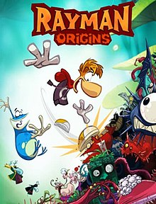
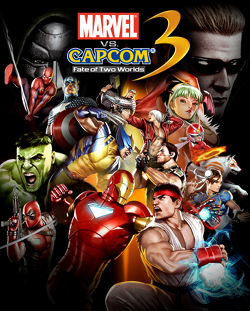
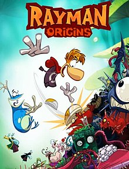
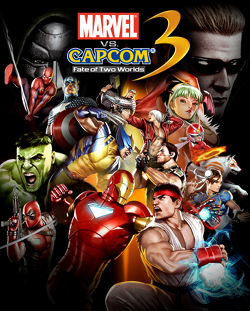

About Adam
Adam Alkins grew up in Huntersville, North Carolina and loves to spend time with his family and friends. Alkins also plays basketball, video games, and swims during his free time. He specialized in freestyle and even made it to the state competition for his high school. Being 6'3", Alkins has played center for recreational league basketball teams since he was 5. Alkins' favorite genre of video games is fighting, although he plays many different titles. Alkins' has been a top 75 ranked player in multiple fighting games.
Family and Friends
Pictured on this page is Alkins' family. He has two brothers, Scott (top left) and Mark (bottom left). Also pictured are his parents. His parents, Brett and Jill, are also pictured. Alkins' family is split between New Jersey and North Carolina, although he has spent most of his life in North Carolina. Alkins has one dog, Maggie, also pictured to the left.
Favorites
Alkins enjoys music, movies, video games, and books. Also on this page are some of his favorites of each of these.
Movies
Alkins' favorite movies are: Swiss Army Man, Everything Everywhere All at Once, The Secret Life of Walter Mitty, and Paddleton.
Music
Alkins' favorite songs are: Hand of God by Jon Bellion, On That Time by Playboi Carti, Turban by Yeat, and intellectual greed by brakence.
Video Games
Alkins' favorite video games are: Marvel vs. Capcom 3, Super Smash Brothers Ultimate, Rayman Origins, and Castle Crashers.
Books
Alkins' favorite books are: The Lord of the Rings, Mister Miracle, Atonement, and A Separate Peace.

 


